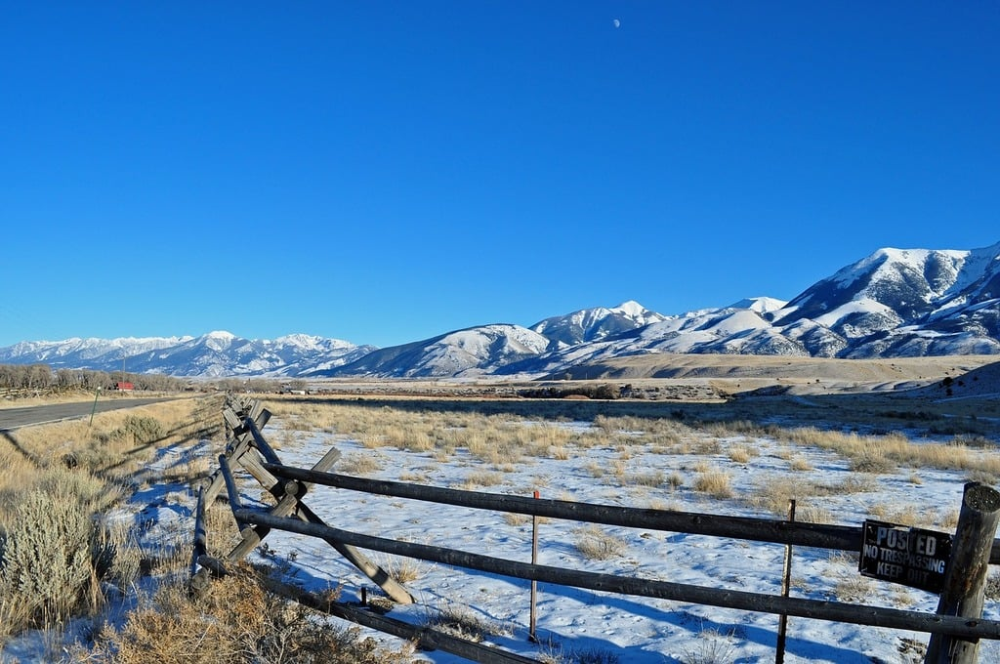

FREQUENTLY ASKED QUESTIONS
If you don't find the question you're looking for below, don't hesitate to call one of our Adventure Consultants at any time at 800-575-1540 or send us an email at info@austinadventures.com. You can also contact us via the Contact page
-
WHAT'S INCLUDED IN THE PRICE?
Apart from the freedom of one meal on your own, we design our trips to be all-inclusive. Typically, the price covers: Double occupancy rooms with private baths All meals and snacks except one dinner on your own Professional and first-aid certified guides and local partners and experts Bikes, kayaks, helmets and other necessary equipment Vehicle support during the trip Luggage service Austin Adventures t-shirt, water bottle, and luggage tags Detailed pre-departure and packing information All taxes, dining and housekeeping gratuities, local partner and expert gratuities and national park entrance and permit fees, unless noted
-
WHAT'S NOT INCLUDED?
Typical trip exclusions are detailed for you in our pre-trip planners, and they include: Gratuities to Austin Adventures guides Alcoholic beverages and related gratuities 1 dinner during the trip Pre-and post-trip accommodations and associated expenses Air and land transportation to and from host cities In-country air on international itineraries (unless noted) Airport departure taxes and some park entry fees Personal travel and medical insurance Optional activities and spa services Items of a personal nature
-
HOW DIFFICULT AND FLEXIBLE ARE TRIP ACTIVITIES?
You don't have to be a fitness fanatic to enjoy our trips. A typical day consists of a personally paced 5-mile hike or 20-mile bike ride. We're flexible, though ”“ we'll adjust distances and levels of difficulty up or down according to your abilities and desires.
-
WHAT ABOUT SINGLE AND SOLO TRAVELERS?
Many of our guests travel solo. Solo travelers have the option of paying a single supplement for a private room throughout the trip. At your request, we will also try to match you up with a suitable roommate. If we're unable to do so and you are forced into a private room situation, we will only charge you 50% of the customary single supplement charge (on most trips). We recommend talking to one of our Custom Trip Experts if this is something you're interested in.

-
HOW FAR IN ADVANCE DO I NEED TO RESERVE MY TRIP?
The farther in advance you book, the better selection of dates you'll have. On most trips you'll want to book 3 to 6 months out. For holiday trips, you'll want to reserve 6 to 8 months out. Rest assured, though, we're also masters at accommodating last-minute reservations!
-
ARE THE HIKING AND BIKING DISTANCES THE SAME ON FAMILY TRIPS?
To accommodate our youngest guests, family hikes and bike rides are typically shorter and easier. Our guides are happy to keep children entertained while adults/teens opt for a challenging hike, bike ride, etc. - distances and levels of difficulty for adults and teens are easy to adjust.
-
HOW LARGE ARE YOUR GROUPS?
We promise an intimate experience with maximum flexibility and personal attention. On most trips, we take 2 guides and an average of 10 to 12 guests. On family adventures we can accommodate up to 18 guests with 3 guides. We are also experts at planning exclusive and custom trips ranging from 5 guests to 50 or more.
-
WILL I HAVE TIME TO SPEND ON MY OWN?
Though our days are busy, there's always downtime to shop, relax or visit the spa. At any time during your trip, if you feel like putting your feet up instead of opting for the day's activities, that's fine. This is your vacation!
-
WHAT IS THE MINIMUM AGE AND DO YOU OFFER CHILD DISCOUNTS?
On adult trips, our minimum age is 16. On designated family adventures, we accommodate children as young as 7 (age 6 for Yellowstone & age 5 on our Costa Rica Family Adventures). Children who share accommodations with one or more adults will receive discounts of 10 - 25%, depending upon the trip.

-
CAN I TALK TO SOMEONE WHO'S TAKEN A TRIP WITH YOU?
Absolutely. Our alumni are some of our best sources of information. Just give us a call and we'll provide references for the specific trip you're interested in.